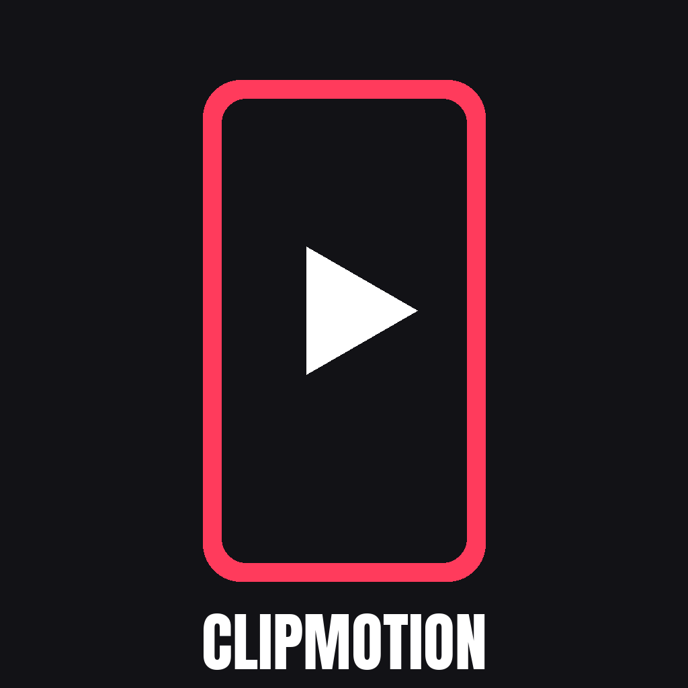

ClipmotionPrivacy policy
Last updated: 3 November 2026
Clipmotion is a personal tool used by its owner to publish clips to their own YouTube and TikTok accounts. It is not offered to the public and has no user accounts of its own.
What data we use
- YouTube and TikTok sign-in. When the owner connects an account, Google or TikTok issues an access token. Clipmotion uses it only to upload videos and read the basic profile (name and avatar) of the connected account.
- Videos. Clipmotion downloads public videos that allow reuse and creates clips from them.
Where it is stored
All tokens, videos and clips are stored only on the owner's computer. Clipmotion has no server and does not store data anywhere else.
Sharing
Clipmotion does not sell or share data with anyone. Data is only sent to YouTube and TikTok, to upload the clips the owner chose to publish.
Deleting data
Access can be revoked at any time in the Google account settings or in the TikTok app under Settings › Security › Manage app permissions. Deleting the Clipmotion folder on the computer removes all stored data.